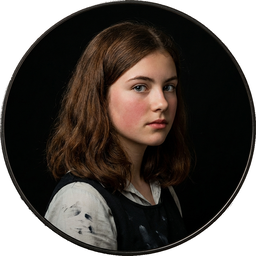

Cast of Characters
Click to hear their voice

I. Playing Pilgrims.
"Christmas won't be Christmas without any presents," grumbled Jo, lying on the rug.
"It's so dreadful to be poor!" sighed Meg, looking down at her old dress.
"I don't think it's fair for some girls to have plenty of pretty things, and other girls nothing at all," added little Amy, with an injured sniff.
"We've got father and mother and each other," said Beth contentedly, from her corner.
The four young faces on which the firelight shone brightened at the cheerful words, but darkened again as Jo said sadly,—
"We haven't got father, and shall not have him for a long time." She didn't say "perhaps never," but each silently added it, thinking of father far away, where the fighting was.
Nobody spoke for a minute; then Meg said in an altered tone,—
"You know the reason mother proposed not having any presents this Christmas was because it is going to be a hard winter for every one; and she thinks we ought not to spend money for pleasure, when our men are suffering so in the army. We can't do much, but we can make our little sacrifices, and ought to do it gladly. But I am afraid I don't;" and Meg shook her head, as she thought regretfully of all the pretty things she wanted.
"But I don't think the little we should spend would do any good. We've each got a dollar, and the army wouldn't be much helped by our giving that. I agree not to expect anything from mother or you, but I do want to buy Undine and Sintram for myself; I've wanted it so long," said Jo, who was a bookworm.
"I planned to spend mine in new music," said Beth, with a little sigh, which no one heard but the hearth-brush and kettle-holder.
"I shall get a nice box of Faber's drawing-pencils; I really need them," said Amy decidedly.
"Mother didn't say anything about our money, and she won't wish us to give up everything. Let's each buy what we want, and have a little fun; I'm sure we work hard enough to earn it," cried Jo, examining the heels of her shoes in a gentlemanly manner.
"I know I do,—teaching those tiresome children nearly all day, when I'm longing to enjoy myself at home," began Meg, in the complaining tone again.
"You don't have half such a hard time as I do," said Jo. "How would you like to be shut up for hours with a nervous, fussy old lady, who keeps you trotting, is never satisfied, and worries you till you're ready to fly out of the window or cry?"
"It's naughty to fret; but I do think washing dishes and keeping things tidy is the worst work in the world. It makes me cross; and my hands get so stiff, I can't practise well at all;" and Beth looked at her rough hands with a sigh that any one could hear that time.
"I don't believe any of you suffer as I do," cried Amy; "for you don't have to go to school with impertinent girls, who plague you if you don't know your lessons, and laugh at your dresses, and label your father if he isn't rich, and insult you when your nose isn't nice."
"If you mean libel, I'd say so, and not talk about labels, as if papa was a pickle-bottle," advised Jo, laughing.
"I know what I mean, and you needn't be statirical about it. It's proper to use good words, and improve your vocabilary," returned Amy, with dignity.
"Don't peck at one another, children. Don't you wish we had the money papa lost when we were little, Jo? Dear me! how happy and good we'd be, if we had no worries!" said Meg, who could remember better times.
"You said the other day, you thought we were a deal happier than the King children, for they were fighting and fretting all the time, in spite of their money."
"So I did, Beth. Well, I think we are; for, though we do have to work, we make fun for ourselves, and are a pretty jolly set, as Jo would say."
"Jo does use such slang words!" observed Amy, with a reproving look at the long figure stretched on the rug. Jo immediately sat up, put her hands in her pockets, and began to whistle.
"Don't, Jo; it's so boyish!"
"That's why I do it."
"I detest rude, unlady-like girls!"
"I hate affected, niminy-piminy chits!"
"'Birds in their little nests agree,'" sang Beth, the peace-maker, with such a funny face that both sharp voices softened to a laugh, and the "pecking" ended for that time.
"Really, girls, you are both to be blamed," said Meg, beginning to lecture in her elder-sisterly fashion. "You are old enough to leave off boyish tricks, and to behave better, Josephine. It didn't matter so much when you were a little girl; but now you are so tall, and turn up your hair, you should remember that you are a young lady."
"I'm not! and if turning up my hair makes me one, I'll wear it in two tails till I'm twenty," cried Jo, pulling off her net, and shaking down a chestnut mane. "I hate to think I've got to grow up, and be Miss March, and wear long gowns, and look as prim as a China-aster! It's bad enough to be a girl, anyway, when I like boys' games and work and manners! I can't get over my disappointment in not being a boy; and it's worse than ever now, for I'm dying to go and fight with papa, and I can only stay at home and knit, like a poky old woman!" And Jo shook the blue army-sock till the needles rattled like castanets, and her ball bounded across the room.
"Poor Jo! It's too bad, but it can't be helped; so you must try to be contented with making your name boyish, and playing brother to us girls," said Beth, stroking the rough head at her knee with a hand that all the dish-washing and dusting in the world could not make ungentle in its touch.
"As for you, Amy," continued Meg, "you are altogether too particular and prim. Your airs are funny now; but you'll grow up an affected little goose, if you don't take care. I like your nice manners and refined ways of speaking, when you don't try to be elegant; but your absurd words are as bad as Jo's slang."
"If Jo is a tom-boy and Amy a goose, what am I, please?" asked Beth, ready to share the lecture.
"You're a dear, and nothing else," answered Meg warmly; and no one contradicted her, for the "Mouse" was the pet of the family.
As young readers like to know "how people look," we will take this moment to give them a little sketch of the four sisters, who sat knitting away in the twilight, while the December snow fell quietly without, and the fire crackled cheerfully within. It was a comfortable old room, though the carpet was faded and the furniture very plain; for a good picture or two hung on the walls, books filled the recesses, chrysanthemums and Christmas roses bloomed in the windows, and a pleasant atmosphere of home-peace pervaded it.
Margaret, the eldest of the four, was sixteen, and very pretty, being plump and fair, with large eyes, plenty of soft, brown hair, a sweet mouth, and white hands, of which she was rather vain. Fifteen-year-old Jo was very tall, thin, and brown, and reminded one of a colt; for she never seemed to know what to do with her long limbs, which were very much in her way. She had a decided mouth, a comical nose, and sharp, gray eyes, which appeared to see everything, and were by turns fierce, funny, or thoughtful. Her long, thick hair was her one beauty; but it was usually bundled into a net, to be out of her way. Round shoulders had Jo, big hands and feet, a fly-away look to her clothes, and the uncomfortable appearance of a girl who was rapidly shooting up into a woman, and didn't like it. Elizabeth—or Beth, as every one called her—was a rosy, smooth-haired, bright-eyed girl of thirteen, with a shy manner, a timid voice, and a peaceful expression, which was seldom disturbed. Her father called her "Little Tranquillity," and the name suited her excellently; for she seemed to live in a happy world of her own, only venturing out to meet the few whom she trusted and loved. Amy, though the youngest, was a most important person,—in her own opinion at least. A regular snow-maiden, with blue eyes, and yellow hair, curling on her shoulders, pale and slender, and always carrying herself like a young lady mindful of her manners. What the characters of the four sisters were we will leave to be found out.
The clock struck six; and, having swept up the hearth, Beth put a pair of slippers down to warm. Somehow the sight of the old shoes had a good effect upon the girls; for mother was coming, and every one brightened to welcome her. Meg stopped lecturing, and lighted the lamp, Amy got out of the easy-chair without being asked, and Jo forgot how tired she was as she sat up to hold the slippers nearer to the blaze.
"They are quite worn out; Marmee must have a new pair."
"I thought I'd get her some with my dollar," said Beth.
"No, I shall!" cried Amy.
"I'm the oldest," began Meg, but Jo cut in with a decided—
"I'm the man of the family now papa is away, and I shall provide the slippers, for he told me to take special care of mother while he was gone."
"I'll tell you what we'll do," said Beth; "let's each get her something for Christmas, and not get anything for ourselves."
"That's like you, dear! What will we get?" exclaimed Jo.
Every one thought soberly for a minute; then Meg announced, as if the idea was suggested by the sight of her own pretty hands, "I shall give her a nice pair of gloves."
"Army shoes, best to be had," cried Jo.
"Some handkerchiefs, all hemmed," said Beth.
"I'll get a little bottle of cologne; she likes it, and it won't cost much, so I'll have some left to buy my pencils," added Amy.
"How will we give the things?" asked Meg.
"Put them on the table, and bring her in and see her open the bundles. Don't you remember how we used to do on our birthdays?" answered Jo.
"I used to be so frightened when it was my turn to sit in the big chair with the crown on, and see you all come marching round to give the presents, with a kiss. I liked the things and the kisses, but it was dreadful to have you sit looking at me while I opened the bundles," said Beth, who was toasting her face and the bread for tea, at the same time.
"Let Marmee think we are getting things for ourselves, and then surprise her. We must go shopping to-morrow afternoon, Meg; there is so much to do about the play for Christmas night," said Jo, marching up and down, with her hands behind her back and her nose in the air.
"I don't mean to act any more after this time; I'm getting too old for such things," observed Meg, who was as much a child as ever about "dressing-up" frolics.
"You won't stop, I know, as long as you can trail round in a white gown with your hair down, and wear gold-paper jewelry. You are the best actress we've got, and there'll be an end of everything if you quit the boards," said Jo. "We ought to rehearse to-night. Come here, Amy, and do the fainting scene, for you are as stiff as a poker in that."
"I can't help it; I never saw any one faint, and I don't choose to make myself all black and blue, tumbling flat as you do. If I can go down easily, I'll drop; if I can't, I shall fall into a chair and be graceful; I don't care if Hugo does come at me with a pistol," returned Amy, who was not gifted with dramatic power, but was chosen because she was small enough to be borne out shrieking by the villain of the piece.
"Do it this way; clasp your hands so, and stagger across the room, crying frantically, 'Roderigo! save me! save me!'" and away went Jo, with a melodramatic scream which was truly thrilling.
Amy followed, but she poked her hands out stiffly before her, and jerked herself along as if she went by machinery; and her "Ow!" was more suggestive of pins being run into her than of fear and anguish. Jo gave a despairing groan, and Meg laughed outright, while Beth let her bread burn as she watched the fun, with interest.
"It's no use! Do the best you can when the time comes, and if the audience laugh, don't blame me. Come on, Meg."
Then things went smoothly, for Don Pedro defied the world in a speech of two pages without a single break; Hagar, the witch, chanted an awful incantation over her kettleful of simmering toads, with weird effect; Roderigo rent his chains asunder manfully, and Hugo died in agonies of remorse and arsenic, with a wild "Ha! ha!"
"It's the best we've had yet," said Meg, as the dead villain sat up and rubbed his elbows.
"I don't see how you can write and act such splendid things, Jo. You're a regular Shakespeare!" exclaimed Beth, who firmly believed that her sisters were gifted with wonderful genius in all things.
"Not quite," replied Jo modestly. "I do think 'The Witch's Curse, an Operatic Tragedy,' is rather a nice thing; but I'd like to try Macbeth, if we only had a trap-door for Banquo. I always wanted to do the killing part. 'Is that a dagger that I see before me?'" muttered Jo, rolling her eyes and clutching at the air, as she had seen a famous tragedian do.
"No, it's the toasting fork, with mother's shoe on it instead of the bread. Beth's stage-struck!" cried Meg, and the rehearsal ended in a general burst of laughter.
"Glad to find you so merry, my girls," said a cheery voice at the door, and actors and audience turned to welcome a tall, motherly lady, with a "can-I-help-you" look about her which was truly delightful. She was not elegantly dressed, but a noble-looking woman, and the girls thought the gray cloak and unfashionable bonnet covered the most splendid mother in the world.
"Well, dearies, how have you got on to-day? There was so much to do, getting the boxes ready to go to-morrow, that I didn't come home to dinner. Has any one called, Beth? How is your cold, Meg? Jo, you look tired to death. Come and kiss me, baby."
While making these maternal inquiries Mrs. March got her wet things off, her warm slippers on, and sitting down in the easy-chair, drew Amy to her lap, preparing to enjoy the happiest hour of her busy day. The girls flew about, trying to make things comfortable, each in her own way. Meg arranged the tea-table; Jo brought wood and set chairs, dropping, overturning, and clattering everything she touched; Beth trotted to and fro between parlor and kitchen, quiet and busy; while Amy gave directions to every one, as she sat with her hands folded.
As they gathered about the table, Mrs. March said, with a particularly happy face, "I've got a treat for you after supper."
A quick, bright smile went round like a streak of sunshine. Beth clapped her hands, regardless of the biscuit she held, and Jo tossed up her napkin, crying, "A letter! a letter! Three cheers for father!"
"Yes, a nice long letter. He is well, and thinks he shall get through the cold season better than we feared. He sends all sorts of loving wishes for Christmas, and an especial message to you girls," said Mrs. March, patting her pocket as if she had got a treasure there.
"Hurry and get done! Don't stop to quirk your little finger, and simper over your plate, Amy," cried Jo, choking in her tea, and dropping her bread, butter side down, on the carpet, in her haste to get at the treat.
Beth ate no more, but crept away, to sit in her shadowy corner and brood over the delight to come, till the others were ready.
"I think it was so splendid in father to go as a chaplain when he was too old to be drafted, and not strong enough for a soldier," said Meg warmly.
"Don't I wish I could go as a drummer, a vivan—what's its name? or a nurse, so I could be near him and help him," exclaimed Jo, with a groan.
"It must be very disagreeable to sleep in a tent, and eat all sorts of bad-tasting things, and drink out of a tin mug," sighed Amy.
"When will he come home, Marmee?" asked Beth, with a little quiver in her voice.
"Not for many months, dear, unless he is sick. He will stay and do his work faithfully as long as he can, and we won't ask for him back a minute sooner than he can be spared. Now come and hear the letter."
They all drew to the fire, mother in the big chair with Beth at her feet, Meg and Amy perched on either arm of the chair, and Jo leaning on the back, where no one would see any sign of emotion if the letter should happen to be touching.
Very few letters were written in those hard times that were not touching, especially those which fathers sent home. In this one little was said of the hardships endured, the dangers faced, or the homesickness conquered; it was a cheerful, hopeful letter, full of lively descriptions of camp life, marches, and military news; and only at the end did the writer's heart overflow with fatherly love and longing for the little girls at home.
"Give them all my dear love and a kiss. Tell them I think of them by day, pray for them by night, and find my best comfort in their affection at all times. A year seems very long to wait before I see them, but remind them that while we wait we may all work, so that these hard days need not be wasted. I know they will remember all I said to them, that they will be loving children to you, will do their duty faithfully, fight their bosom enemies bravely, and conquer themselves so beautifully, that when I come back to them I may be fonder and prouder than ever of my little women."
Everybody sniffed when they came to that part; Jo wasn't ashamed of the great tear that dropped off the end of her nose, and Amy never minded the rumpling of her curls as she hid her face on her mother's shoulder and sobbed out, "I am a selfish girl! but I'll truly try to be better, so he mayn't be disappointed in me by and by."
"We all will!" cried Meg. "I think too much of my looks, and hate to work, but won't any more, if I can help it."
"I'll try and be what he loves to call me, 'a little woman,' and not be rough and wild; but do my duty here instead of wanting to be somewhere else," said Jo, thinking that keeping her temper at home was a much harder task than facing a rebel or two down South.
Beth said nothing, but wiped away her tears with the blue army-sock, and began to knit with all her might, losing no time in doing the duty that lay nearest her, while she resolved in her quiet little soul to be all that father hoped to find her when the year brought round the happy coming home.
Mrs. March broke the silence that followed Jo's words, by saying in her cheery voice, "Do you remember how you used to play Pilgrim's Progress when you were little things? Nothing delighted you more than to have me tie my piece-bags on your backs for burdens, give you hats and sticks and rolls of paper, and let you travel through the house from the cellar, which was the City of Destruction, up, up, to the house-top, where you had all the lovely things you could collect to make a Celestial City."
"What fun it was, especially going by the lions, fighting Apollyon, and passing through the Valley where the hobgoblins were!" said Jo.
"I liked the place where the bundles fell off and tumbled down stairs," said Meg.
"My favorite part was when we came out on the flat roof where our flowers and arbors and pretty things were, and all stood and sung for joy up there in the sunshine," said Beth, smiling, as if that pleasant moment had come back to her.
"I don't remember much about it, except that I was afraid of the cellar and the dark entry, and always liked the cake and milk we had up at the top. If I wasn't too old for such things, I'd rather like to play it over again," said Amy, who began to talk of renouncing childish things at the mature age of twelve.
"We never are too old for this, my dear, because it is a play we are playing all the time in one way or another. Our burdens are here, our road is before us, and the longing for goodness and happiness is the guide that leads us through many troubles and mistakes to the peace which is a true Celestial City. Now, my little pilgrims, suppose you begin again, not in play, but in earnest, and see how far on you can get before father comes home."
"Really, mother? Where are our bundles?" asked Amy, who was a very literal young lady.
"Each of you told what your burden was just now, except Beth; I rather think she hasn't got any," said her mother.
"Yes, I have; mine is dishes and dusters, and envying girls with nice pianos, and being afraid of people."
Beth's bundle was such a funny one that everybody wanted to laugh; but nobody did, for it would have hurt her feelings very much.
"Let us do it," said Meg thoughtfully. "It is only another name for trying to be good, and the story may help us; for though we do want to be good, it's hard work, and we forget, and don't do our best."
"We were in the Slough of Despond to-night, and mother came and pulled us out as Help did in the book. We ought to have our roll of directions, like Christian. What shall we do about that?" asked Jo, delighted with the fancy which lent a little romance to the very dull task of doing her duty.
"Look under your pillows, Christmas morning, and you will find your guide-book," replied Mrs. March.
They talked over the new plan while old Hannah cleared the table; then out came the four little work-baskets, and the needles flew as the girls made sheets for Aunt March. It was uninteresting sewing, but to-night no one grumbled. They adopted Jo's plan of dividing the long seams into four parts, and calling the quarters Europe, Asia, Africa, and America, and in that way got on capitally, especially when they talked about the different countries as they stitched their way through them.
At nine they stopped work, and sung, as usual, before they went to bed. No one but Beth could get much music out of the old piano; but she had a way of softly touching the yellow keys, and making a pleasant accompaniment to the simple songs they sung. Meg had a voice like a flute, and she and her mother led the little choir. Amy chirped like a cricket, and Jo wandered through the airs at her own sweet will, always coming out at the wrong place with a croak or a quaver that spoilt the most pensive tune. They had always done this from the time they could lisp
"Crinkle, crinkle, 'ittle 'tar,"
and it had become a household custom, for the mother was a born singer. The first sound in the morning was her voice, as she went about the house singing like a lark; and the last sound at night was the same cheery sound, for the girls never grew too old for that familiar lullaby.